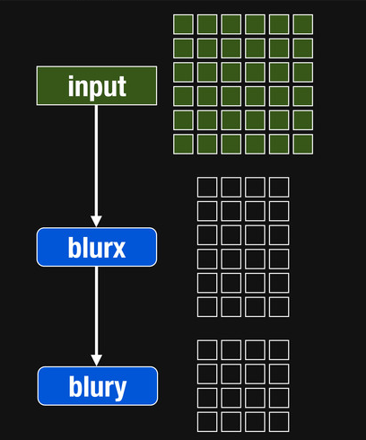
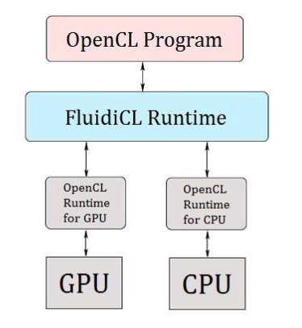

A Synergistic framework
base on Halide
present by Ken Kuang
Outline
Introduction
Background Knowledge
System Architecture
Implement
Experiment Result
Conclusion
Introduction
It’s several research target on synergistically computing
by using Heterogeneous computing language like OpenCL.
But OpenCL is difficult to
- Program
- Tune performance
It makes Programming heterogeneous computing systems become
- Complex
- Time-consuming
To solve this problem,I decide to use Halide a new language to reduce the difficulty of programing.
Background Knowledge
Halide decouple algorithm from schedule
- Algorithm : What is computed
- Schedule : Where and When its' computed
Easy for programmers to build pipelines
- simplifies algorithm code
- improves modularity
Easy for programmers to specify & explore optimizations
- fusion, tiling, parallelism, vectorization
- can’t break the algorithm
Easy for the compiler to generate fast code
Native C++ Code
Image<uint16_t> blur(Image<uint16_t> in) {
Image<uint16_t> tmp(in.width()-8, in.height());
Image<uint16_t> out(in.width()-8, in.height()-2);
for (int y = 0; y < tmp.height(); y++)
for (int x = 0; x < tmp.width(); x++)
tmp(x, y) = (in(x, y) + in(x+1, y) + in(x+2, y))/3;
for (int y = 0; y < out.height(); y++)
for (int x = 0; x < out.width(); x++)
out(x, y) = (tmp(x, y) + tmp(x, y+1) + tmp(x, y+2))/3;
return out;
}
OpenMP Code
Image<uint16_t> blur_fast(Image<uint16_t> in) {
Image<uint16_t> out(in.width()-8, in.height()-2);
begin_timing;
__m128i one_third = _mm_set1_epi16(21846);
#pragma omp parallel for
for (int yTile = 0; yTile < out.height(); yTile += 32) {
__m128i a, b, c, sum, avg;
__m128i tmp[(128/8) * (32 + 2)];
for (int xTile = 0; xTile < out.width(); xTile += 128) {
__m128i *tmpPtr = tmp;
for (int y = 0; y < 32+2; y++) {
const uint16_t *inPtr = &(in(xTile, yTile+y));
for (int x = 0; x < 128; x += 8) {
a = _mm_load_si128((__m128i*)(inPtr));
b = _mm_loadu_si128((__m128i*)(inPtr+1));
c = _mm_loadu_si128((__m128i*)(inPtr+2));
sum = _mm_add_epi16(_mm_add_epi16(a, b), c);
avg = _mm_mulhi_epi16(sum, one_third);
_mm_store_si128(tmpPtr++, avg);
inPtr+=8;
}
}
tmpPtr = tmp;
for (int y = 0; y < 32; y++) {
__m128i *outPtr = (__m128i *)(&(out(xTile, yTile+y)));
for (int x = 0; x < 128; x += 8) {
a = _mm_load_si128(tmpPtr+(2*128)/8);
b = _mm_load_si128(tmpPtr+128/8);
c = _mm_load_si128(tmpPtr++);
sum = _mm_add_epi16(_mm_add_epi16(a, b), c);
avg = _mm_mulhi_epi16(sum, one_third);
_mm_store_si128(outPtr++, avg);
}
}
}
}
end_timing;
return out;
}
Halide Code
ImageParam input(UInt(16), 2);
Func blur_x("blur_x"), blur_y("blur_y");
Var x("x"), y("y"), xi("xi"), yi("yi");
// The algorithm
blur_x(x, y) = (input(x, y) + input(x+1, y) + input(x+2, y))/3;
blur_y(x, y) = (blur_x(x, y) + blur_x(x, y+1) + blur_x(x, y+2))/3;
// How to schedule it
blur_y.split(y, y, yi, 8).parallel(y).vectorize(x, 8);
blur_x.store_at(blur_y, y).compute_at(blur_y, yi).vectorize(x, 8);
blur_y.compile_to_file("halide_blur", input);
Halide Pipelines
Halide Consumer/Producer Relastions
Halide CodeGen Flow

System Architecture
OpenCL with Multi Device
Architecture of other FluidiCL
Architecture of My Work
Implement Method
Memory Management
Memory Management con'd
Static Dispatch
Dynamic Dispatch
Usage
local_laplacian_gpu(levels,alpha/(levels-1),beta,input,output);//Haldie function
//Static Dispatch
StaticDispatch static(input,output);
static.realize(local_laplacian_cpu,local_laplacian_gpu,workload,levels,alpha/(levels-1),beta);
//Dynamic Dispatch
DynamicDispatch dynamic(input,output);
dynamic.realize(local_laplacian_cpu,local_laplacian_gpu,levels,alpha/(levels-1),beta);
Experiment Result
Testing platform
| Platform | CPU | GPU |
| Android Nexus 7 | Quad-core 1.5 GHz Krait | Adreno 320 |
| PC 1 | Intel(R) Core(TM) i5-4590 CPU @ 3.30GHz | ATI Radeon R7 260X |
| PC 2 | Intel(R) Core(TM) i5-3470 CPU @ 3.20GHz | NVIDIA GTX 750 |
Bilateral
for(int j= kernelStartY; j<= kernelEndY; j++)
{
for(int i= kernelStartX; i<= kernelEndX; i++)
{
unsigned int idx = max(0, min(j, height-1))*width + max(0, min(i,width-1));
float curPix[3];
curPix[0] = _in[idx].x;
curPix[1] = _in[idx].y;
curPix[2] = _in[idx].z;
float currWeight;
// define bilateral filter kernel weights
float imageDist = sqrt( (float)((i-x)*(i-x) + (j-y)*(j-y)) );
float colorDist = sqrt( (float)( (curPix[0] - ctrPix[0])*(curPix[0] - ctrPix[0]) +
(curPix[1] - ctrPix[1])*(curPix[1] - ctrPix[1]) +
(curPix[2] - ctrPix[2])*(curPix[2] - ctrPix[2]) ) );
currWeight = 1.0f/(exp((imageDist/id)*(imageDist/id)*0.5)*exp((colorDist/cd)*(colorDist/cd)*0.5));
sumWeight += currWeight;
_sum[0] += currWeight*curPix[0];
_sum[1] += currWeight*curPix[1];
_sum[2] += currWeight*curPix[2];
}
}Local Laplacian
The influence of Workload
Bilateral-Workload between CPU and GPU at Nexus 7
.png)
Bilateral-Workload between CPU and GPU at PC 1
.png)
Bilateral-Workload between CPU and GPU at PC 2
.png)
Local Laplacian-Workload between CPU and GPU at Nexus 7
.png)
Local Laplacian-Workload between CPU and GPU at PC 1
.png)
Local Laplacian-Workload between CPU and GPU at PC 2
.png)
The workload and static dispatch
Bilateral-Workload and static dispatch at Nexus 7
.png)
Bilateral-Workload and static dispatch at PC 1
.png)
Bilateral-Workload and static dispatch at PC 2
.png)
Local Laplacian-Workload and static dispatch at Nexus 7
.png)
Local Laplacian-Workload and static dispatch at PC 1
.png)
Local Laplacian-Workload and static dispatch at PC 2
.png)
OpenCL Profile information
Execution of OpenCL API (Bilateral at PC 1)
.png)
Execution of OpenCL API (Bilateral at PC 2)
.png)
CUDA V.S OpenCL
Comparison between CUDA and OpenCL - Bilateral
.png)
Comparison between CUDA and OpenCL - Local Laplacian
.png)
Conclusion
Static Dispatch
When processing Bilateral Static Dispatch improves
- 21% at Nexus 7
- 66% at PC 1
- 16% at PC 2
When processing Local Laplacian Static Dispatch improves
- 24% at Nexus 7
- 23% at PC 1
- 11% at PC 2
Dynamic Dispatch
When processing Bilateral Dynamic Dispatch improves
- 8% at Nexus 7
- 57% at PC 1
- 6% at PC 2